Подключаем дисплей DWIN к ARDUINO по
rs232.
У компании DWIN есть линейка дисплеев в корпусе, которые имеют пылевлагозащиту IP65 и удобные крепежи для монтирования. К таким дисплеям относятся дисплеи серии DMG*****_15W* различного размера с резистивным сенсором. Например: DMG80480T070_15WTR, DMG10600C101_15WTR, DMG80600T080_15WTR.
И дисплеи серии DMG*****_A5W* различного размера с ёмкостным и резистивным сенсором. К ним относятся следующие модели: DMG80480T043_A5WTC или DMG80480T043_A5WTR, DMG80480T050_A5WTC или DMG80480T050_A5WTR, DMG10600T070_A5WTC или DMG10600T070_A5WTR, DMG10600T101-A5WTC или DMG10600T101-A5WTR.
Приведённые выше модели дисплеев несут информационный характер, чтобы вы смогли сориентироваться, о чём идёт речь. Дисплеев в корпусе компании DWIN гораздо больше.
Дисплеи DWIN в корпусе имеют интерфейс RS232 и RS485 и не имеют TTL. Это приводит к невозможности подключить Arduino, ESP8266 или ESP32 напрямую к дисплею.
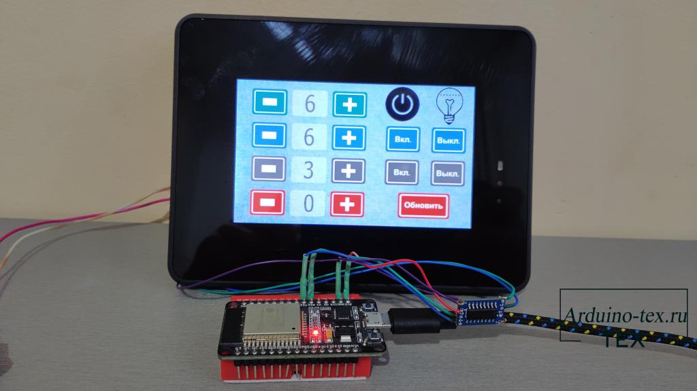
На каком порту какой интерфейс подключен, можно узнать из datasheet на соответствующую модель дисплея.
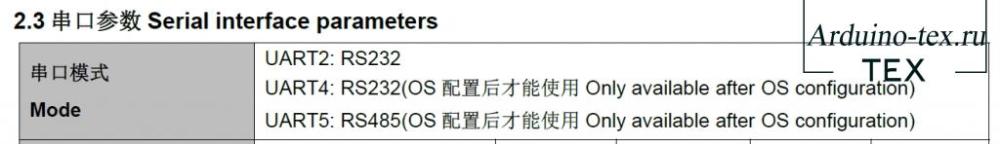
Пример для дисплея промышленного класса в пластиковом корпусе.
Но есть простое решение, о чём и поговорим в данной статье.
Как можно подключить дисплеи DMG80480T070_15WTR,
DMG10600T070_A5WTC и другие к ARDUINO по RS232?
Самый простой способ – подключить дисплеи в корпусе (DMG80480T070_15WTR, DMG10600T070_A5WTC и другие модели) по RS232. Так как при данном способе подключения не нужно дополнительно вносить изменения в код. Достаточно использовать конвертор TTL – RS232. После чего можно взять любой урок с моего сайта и использовать с данными дисплеями DWIN.
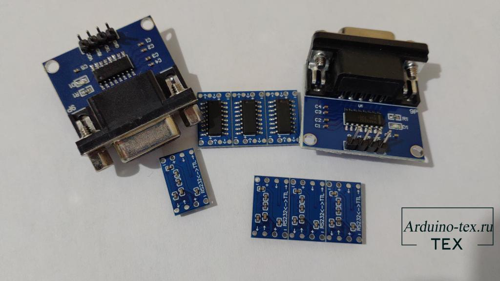
Виды конверторов TTL - RS232 для DWIN и ARDUINO.
Существует конвертор, который можно подключить напрямую по RS232 проводу.
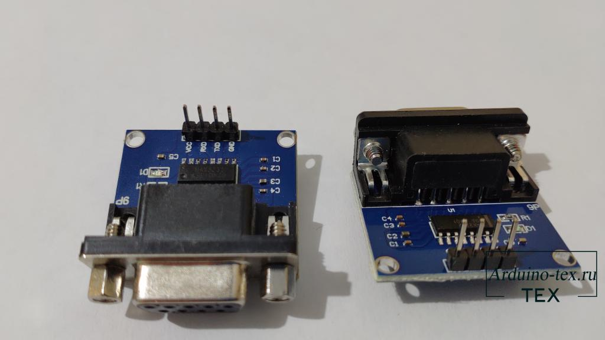
Данные интерфейсы раньше широко применялись для подключения периферийных устройств к ПК.
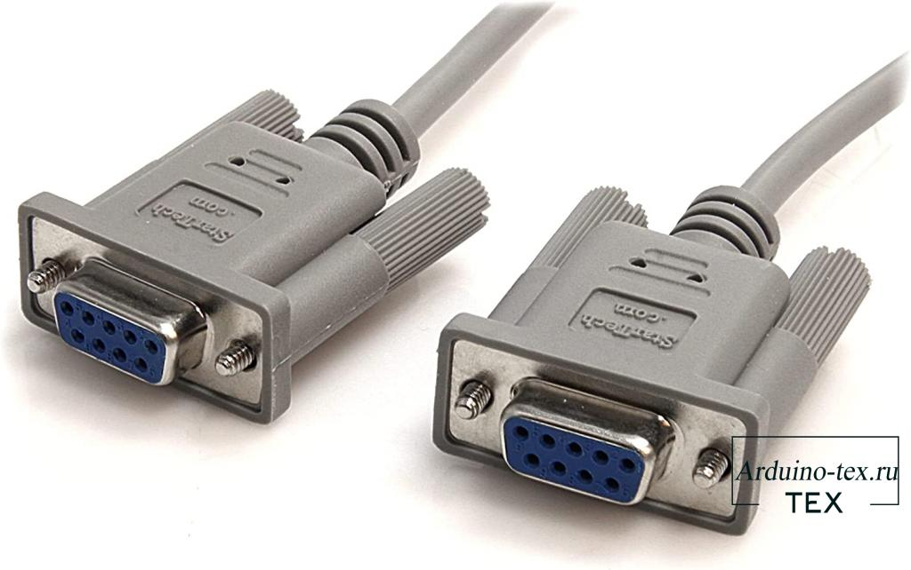
А используя аксессуар HDL65011, можно всё подключить без пайки.
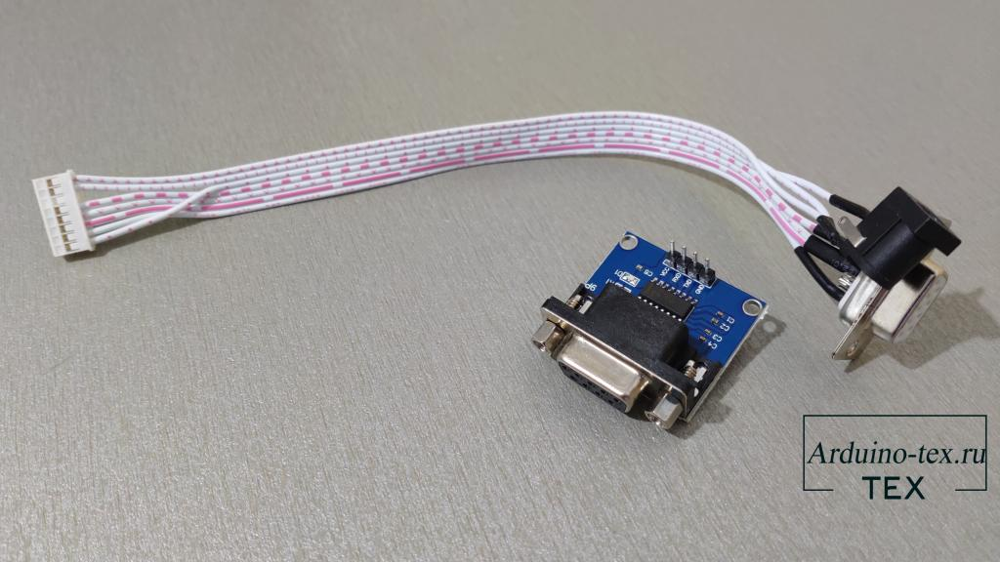
Но, к сожалению, у меня не было в наличии провода RS232, поэтому я использовал TTL –RS232 конвертор вот такого компактного исполнения. Но тут без пайки не обойтись.
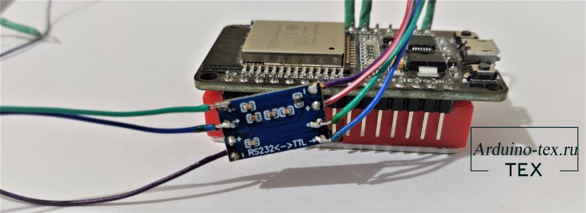
Припаял я необходимые проводники и подключил к ESP8266, так как на данный момент я тестировал новые эффекты для светодиодной гирлянды.
Схема подключения TTL - RS232 конвертора к ESP8266 (NodeMCU) и дисплею DWIN.
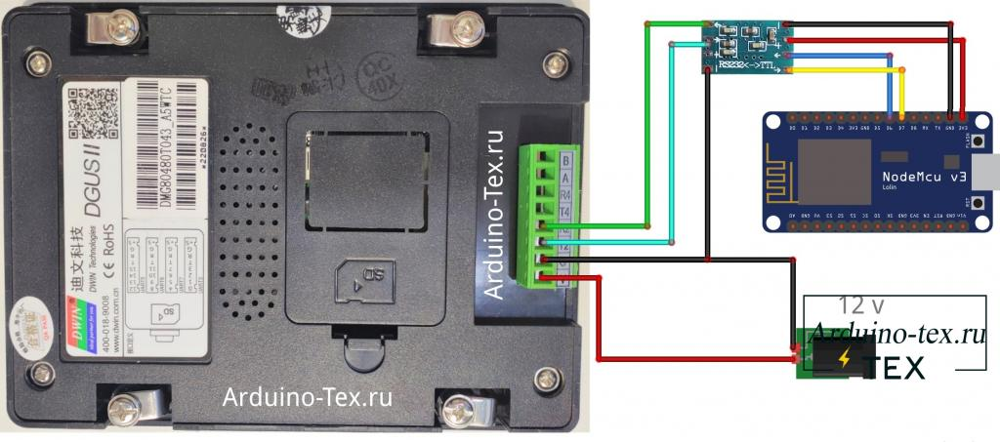
Схема подключения TTL - RS232 конвертора к ESPЗ32 и дисплею DWIN.
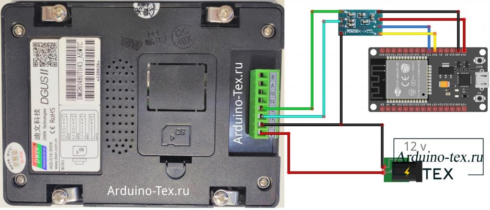
Схема подключения TTL - RS232 конвертора к ARDUINO и дисплею DWIN.
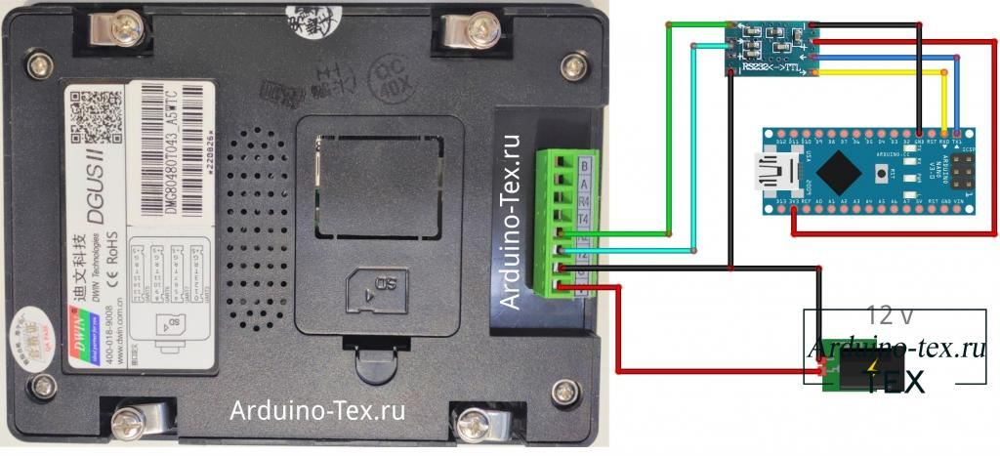
Внимание! На стороне TTL (Arduino) – НЕ подключайте к 5 В, используйте 3,3 В, так как это приводит к нагреву конвертора.
Тестирование работы передачи данных с ARDUINO через TTL - RS232 конвертор
на дисплей DWIN.
Для тестирования можно взять любой пример из моих уроков про дисплеи DWIN или проект с использованием дисплея DWIN. Но для простоты тестирования я сделаю небольшой пример, который будет изменять значения при нажатии на кнопки на дисплее и отправлять их на Arduino, ESP8266 или ESP32. Скачать прошивку для дисплея можно внизу статьи в разделе «Файлы для скачивания».
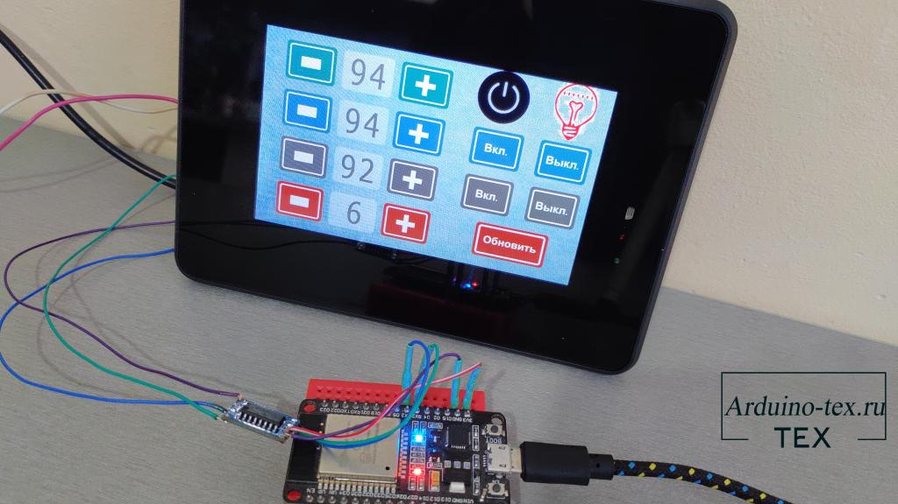
Микроконтроллер, в свою очередь, обработает полученные данные. Если данные пришли от первого счётчика, то значения будут продублированы в поле ниже. В противном случае данные просто будут изменяться в текущей ячейке, а также выведены в монитор порта.
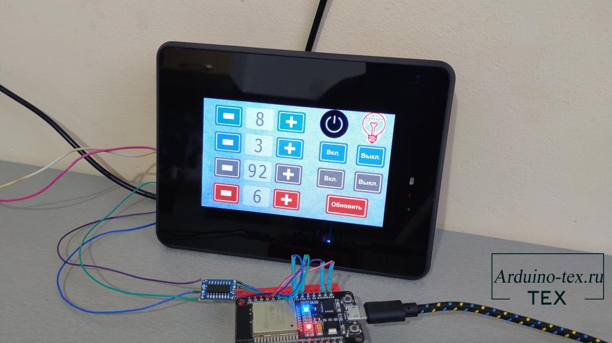
Код для ESP8266 и ESP32 можно скачать внизу статьи в разделе «Файлы для скачивания».
Как видим из примера, синхронно меняются 2 первых цифровых поля и включается и выключается светодиод на отладочной плате. Если изменять только второе значение, то первое не меняется. Это говорит о том, что данные первого и второго поля обновляются синхронно благодаря микроконтроллеру (если отключить микроконтроллер, то изменение будет проходить только в первом поле).
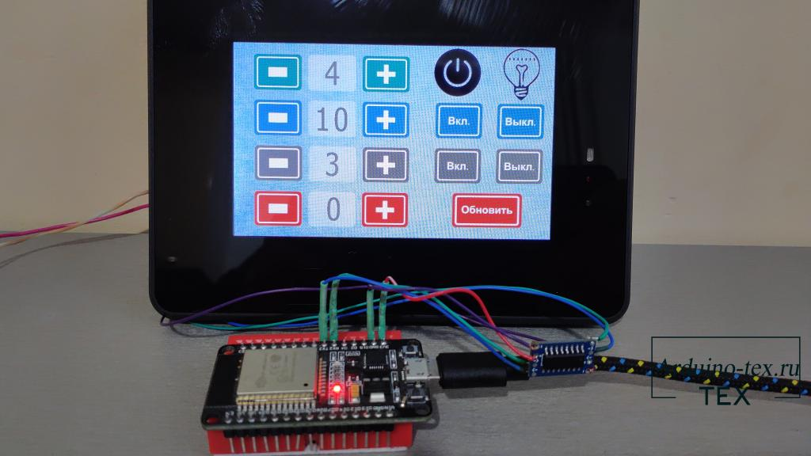
Также работу можно отследить в мониторе порта.
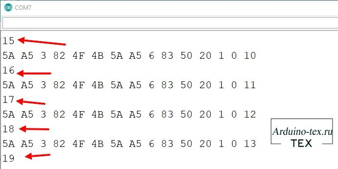
Как видно, у нас приходят данные с дисплея, если менять значения со 2 по 4 цифровое поле. Если изменить значение первого поля, то получим в мониторе порта не только входящее значение от дисплея, но и ответ о том, что данные были переданы на дисплей. Это как раз происходит обновление второго поля данными с МК.
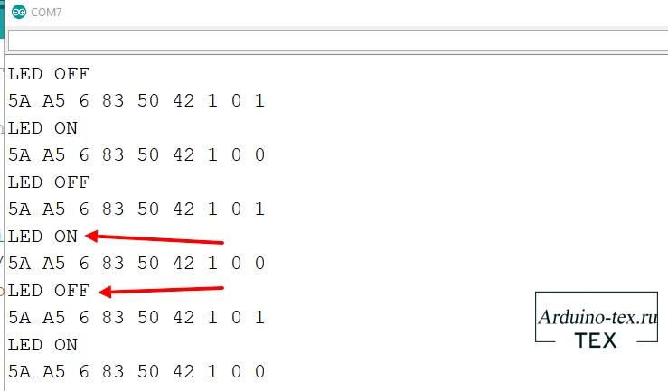
Сегодня в статье рассмотрели, как можно управлять дисплеем DWIN через RS232. В следующей статье рассмотрим, как работать по RS485. Не забывайте оставлять свои комментарии к статье. На основе ваших предложений и вопросов формируются будущие статьи и проекты.
Материал для данной статьи подготовлен командой проекта Arduino-Tex.Ru.
Смотрите также другую полезную информацию про дисплеи DWIN:
И полезная информация для тех, кто дочитал до конца статьи. У вас есть уникальная возможность заказать тестовый образец дисплея компании DWIN Technology. Подробнее тут.
Заказывайте продукцию компании DWIN на AliExpress с использованием промокода ARDUINOTEX или ARDUINOTEX1 и получите скидку 5$, а также гарантированную техническую поддержку на русском языке.
По вопросам получения тестового образца и по оптовым закупкам дисплеев компании DWIN обращайтесь к Константину Сергеевичу:
Понравилась статья Подключаем дисплей DWIN к ARDUINO по rs232? Не забудь поделиться с друзьями в соц. сетях.
А также подписаться на наш канал на YouTube, вступить в группу Вконтакте.
Спасибо за внимание!
Технологии начинаются с простого!
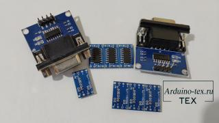
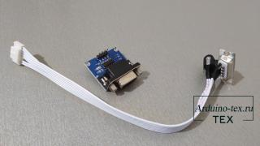
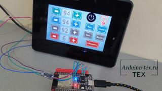
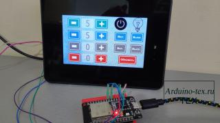
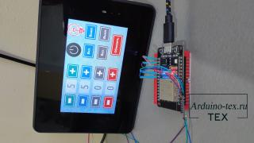
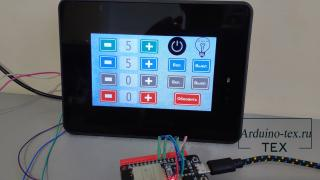
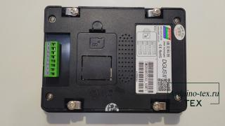
Скачивая материал, я соглашаюсь с Правилами скачивания и использования материалов.
|
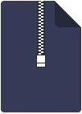 |
Код для ESP32 .zip |
2 Kb |
26 |
|
|
Код для ESP8266.zip |
2 Kb |
18 |
||
|
Прошивка для DWIN.zip |
1354 Kb |
22 |
||
|
DMG80480T043_A5WTR - Datasheet.pdf |
3548 Kb |
19 |
||
|
DMG80480T043_A5WTC - Datasheet.pdf |
3553 Kb |
16 |